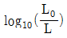
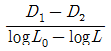
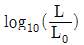
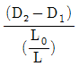
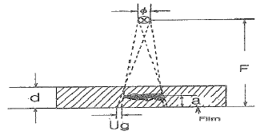
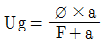
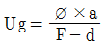
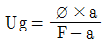
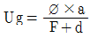
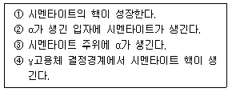

방사선비파괴검사기사(구) (2012-09-15 기출문제)
1과목: 방사선투과시험원리
1. 다음 중 계조계의 사용 목적은?
- 필름의 농도를 측정하기 위하여
- 모재와 용접부의 농도차를 알기 위하여
- 결함의 깊이를 대략적으로 측정하기 위하여
- 투과사진의 상질을 평가하기 위하여
(정답률: 알수없음)

2. 다음 중 X선의 성질을 잘못 설명한 것은?
- 광전자를 방출시킨다.
- 전자선을 물질에 충돌시킬 때 발생한다.
- 물질 내에서 컴프턴 산란을 일으킨다.
- 최단파장은 관전류에 따라 다르다.
(정답률: 알수없음)
3. 자동현상제에는 감광유제의 부풀음(Swelling)을 하기 위하여 경화제를 사용한다. 다음 중 경화제에 해당하는 성분은?
- 글루터알데히드(gluteraldehyde)
- 페니돈(phenidone)
- 하이드로 퀴논(hydroquinone)
- 물(water)
(정답률: 알수없음)
4. X선 필름의 사진 농도(D) 표시로 옳은 것은? (단, L0= 입사광의 강도, L = 투과 후의 강도, D1-D2= 농도차(D1＞D2))




(정답률: 알수없음)
5. 다음 중 지나치게 기하학적 불선명도가 커지는 원인으로 가장 영향이 큰 것은?
- 선원과 시험체 또는 시험체와 필름간 거리의 부적합한 선택
- 후방 산란
- 필름의 입상성
- 피사체가 놓인 방향
(정답률: 알수없음)
6. 중성자투과검사의 직접법에 이용하는 변환자(converterfoil)로 구성된 것은?
- Gd, Rh
- Au, Dy
- ln, Dy
- CaWO4, PbO2
(정답률: 알수없음)
7. 미세한 표면 흠을 발견하기에 가장 우수한 침투탐상시험 법은?
- 수세성 염색침투탐상시험법
- 후유화성 염색침투탐상시험법
- 후유화성 형광침투탐상시험법
- 용제제거성 형광침투탐상시험법
(정답률: 알수없음)
8. 초음파탐상검사의 특징을 설명한 것 중 틀린 것은?
- 검사결과를 신속히 알 수 있다.
- 표준시험편 또는 대비시험편 등이 필요하다.
- 균열과 같은 미세한 결함에 대해서도 감도가 높다.
- 조대한 결정입자를 가진 시험체의 검사에 적합하다.
(정답률: 알수없음)
9. X선 발생장치의 유효 관전압이 200kV일 때 발생되는 X선의 최소 파장은?
- 6.2×10-105m
- 6.2×10-12m
- 3.1×10-10m
- 3.1×10-12m
(정답률: 알수없음)
10. 누설검사법 중 가열양극 할로겐누설검출기의 특성을 설명한 것으로 옳은 것은?
- 대기압 하에서 작업이 가능하다.
- 모든 추적가스에서 응답이 잘 이루어진다.
- 인화성 재질이나 폭발성 대기 근처에서도 사용할 수 있다.
- 할로겐 추적가스에 장시간 노출되어도 누설신호에 변화가 없어 측정치의 장시간 보존이 용이하다.
(정답률: 알수없음)
11. 400℃이상의 온도에서 일정 하중조건하에서 장시간 사용했던 재료에 발생하는 파괴로, 일반적으로 모재에 많이 발생하는 균열은?
- 열간균열
- 피로균열
- 응력부식균열
- 크리프균열
(정답률: 알수없음)
12. 침투탐상검사에서 침투액의 침투 성능에 직접적으로 영향을 미치는 요인이 아닌 것은?
- 점성
- 적심성
- 가연성
- 표면장력
(정답률: 알수없음)
13. 압력변화시험의 특성을 설명한 것 중 틀린 것은?
- 누설시험 시간이 보다 길어진다.
- 특별한 추적가스가 필요 없다.
- 시험체의 총누설량과 누설 위치를 정확히 검출할 수 있다.
- 대형 압력용기나 진공시스템에서도 이미 설치되어 있는 압력게이지를 이용하여 누설검사를 수행할 수 있다.
(정답률: 알수없음)
14. 강제 대형 압력용기에 부착된 노즐의 표면 결함을 검출하기 가장 적합한 비파괴검사법은?
- 누설검사
- 자분탐상시험
- 방사선투과시험
- 초음파탐상시험
(정답률: 알수없음)
15. 다음 중 0 K(캘빈온도)와 동등한 온도를 나타내는 것은?
- -360 °R
- -170 °F
- 0 ℃
- -273 ℃
(정답률: 알수없음)
16. 와전류탐상시험시 시험의 가장 큰 문제점에 해당하는 것은?
- 미소한 결함을 탐상할 수 없다.
- 정확한 전기 전도도를 측정할 수 없다.
- 미지변수에 의한 다양한 출력 지시치가 나타난다.
- 검사 누락부위를 방지하기 위하여 검사를 저속도로 해야 한다.
(정답률: 알수없음)
17. 자분탐상검사의 특징을 설명한 것 중 틀린 것은?
- 비철금속 결함탐상에 탁월하다.
- 두 방향의 이상의 검사가 요구된다.
- 표면근처에 있는 결함에 강하게 응답하여 지시를 나타낸다.
- 자속이 셀수록 결함에 강하게 응답하여 지시를 나타낸다.
(정답률: 알수없음)
18. 비파괴시험 기술자의 임무라 볼 수 없는 것은?
- 시험결과의 정확한 판정
- 제조공정의 철저한 관리
- 제품의 품질보증에 대한 책임
- 시험기술 향상을 위해 꾸준한 노력
(정답률: 알수없음)
19. 0.03 ~ 3cm 파장의 전자파를 이용하여 플라스틱 등의 결함을 검출하는 비파괴검사법은?
- 음향방출시험
- 초음파탐상시험
- 마이크로파시험
- 와전류탐상시험
(정답률: 알수없음)
20. 와류탐상검사에서 전류 흐름에 대한 코일의 총 저항을 무엇이라 하는가?
- 인덕턴스
- 리액턴스
- 임피던스
- 리프트옵
(정답률: 알수없음)
2과목: 방사선투과검사
21. 초음파탐상검사와 비교하여 방사선투과검사가 보다 효과적인 경우로 옳은 것은?
- 재질경계 부위와 같은 재질변화를 검출하고자 하는 경우
- 피로균열과 같은 미세한 표면결함을 검출하고자 하는 경우
- 면상 결함이 아닌 내부결함을 검출하고자 하는 경우
- 라미네이션과 같은 면상 결함을 검출하고자 하는 경우
(정답률: 알수없음)
22. 방사선투과검사시 수동현상과 자동현상을 비교한것으로 옳은 것은?
- 자동현상은 수동현상에 비해 짧은 시간에 현상처리가 가능하다.
- 자동현상은 부정확하게 조절되는 시간-온도현상법이다.
- 자동현상은 탱크와 건조기가 별도로 필요하다.
- 자동현상은 용액의 온도가 수동현상에 비해 낮으므로 가열히터가 필요치 않다.
(정답률: 알수없음)
23. 포장된 식료품에 다른 이물질이 들어있는지 또는 금속 삽입물이 주조 플라스틱 제품에 적절히 배치되어 있는지를 확인하는 특수방사선투과검사법으로써, 다량의 제품을 빠른 시간에 검사할 수 있는 이 검사법은?
- 고속도방사선투과검사
- 형광투시검사
- 자동방사선투과검사
- 전자방사선투과검사
(정답률: 알수없음)
24. 단조과정에서 흔히 생기는 불연속은?
- 연삭균열
- 겹침
- 열처리 균열
- 피로 균열
(정답률: 알수없음)
25. X선관은 일반적으로 차폐효과가 크게 설계되어 있다. 그 이유는?
- 불필요한 방향으로 X선이 누출되지 않도록 하기위해
- X선관의 수명을 늘이기 위해
- 초점 크기를 작게하기 위해
- X선 관전류의 안정을 기하기 위해
(정답률: 알수없음)
26. 두께 60mm의 Al 에 X선이 통과하여 선량률이 1%로 감소할 때 이 때의 반가층은 몇 mm 인가? (단, ln 2 = 0.693, ln 100 = 4.6이다.)
- 약 9mm
- 약 15mm
- 약 18mm
- 약 30mm
(정답률: 알수없음)
27. 매우 높은 주파수를 갖는 라디오파 전압(Radio frequency voltage)을 사용하고, 전자총, 가속자 선원, 관형의 파의 유도로 등으로 구성된 전자 가속장치는?
- 선형 가속장치
- 베타트론 가속장치
- 동조변압형 X선 장비
- 반디 그라프 발생장치
(정답률: 알수없음)
28. 방사선발생장치에서 X선 관전압을 높이면?
- 파장이 짧고, 투과력이 강한 X선을 발생한다.
- 파장이 길고, 투과력이 강한 X선을 발생한다.
- 파장이 길고, 투과력이 약한 X선을 발생한다.
- 파장이 짧고, 투과력이 약한 X선을 발생한다.
(정답률: 알수없음)
29. 정착과정에서 티오황산염과 할로겐화은과의 반응은 어떤 역할을 하기 위한 것이 주목적인가?
- 브롬을 제거하는 역할을 한다.
- 현상용액에서 묻은 알칼리를 중화시킨다.
- 현상되지 않은 은입자를 제거하는 역할을 한다.
- 브름화은(AgBr)에서의 은염을 검게 하는 역할을 한다.
(정답률: 알수없음)
30. 시료 분석용 장치의 경우 특성 X-선을 이용하기 위한 표적재질이 아닌 것은?
- 구리(Cu)
- 철(Fe)
- 코발트(Co)
- 베릴륨(Be)
(정답률: 알수없음)
31. 강관의 원주이음 용접부 촬영에서 촬영방법과 통상적인 촬영기술의 적용이 곤란한 경우에 적용하는 상질이 맞게 조합된 것은?
- 내부선원 촬영방법 : B급
- 내부필름 촬영방법 : B급
- 이중벽 단면 촬영방법 : P2급
- 이중벽 양면 촬영방법 : P2급
(정답률: 알수없음)
32. 방사선투과검사시 시험체에 여러 가지 불연속들이 나타났을 때 가장 적절한 조치로 옳은 것은?
- 시험체를 전량 폐기해야 한다.
- 불연속들을 모두 제거한 후 시험체를 사용해야 한다.
- 불연속은 적용 허용기준의 요건에 의해 판정되어야한다.
- 균열의 깊이를 확인하기 위해 인장응력 테스트를 실시하여야 한다.
(정답률: 알수없음)
33. 방사선투과검사에서 촬영된 필름을 현상할 때 일반적으로 현상시간이 증가하면 투과사진 콘트라스트와 현상 속도는 어떻게 변하는가? (단, 현상온도는 20℃ 로 일정하다.)
- 투과사진 콘트라스트와 현상속도가 모두 증가한다.
- 투과사진 콘트라스트와 현상속도가 모두 감소한다.
- 투과사진 콘트라스트는 증가하고, 현상속도는 느려진다.
- 투과사진 콘트라스트는 감소하고, 현상속도는 빨라진다.
(정답률: 알수없음)
34. 배관의 맞대기 용접부를 방사선투과시험하고자 한다. 배관의 길이가 30cm 이고 외경이 150mm 이며 관두께가 40mm라고 하면 상질을 B급으로 할 때 투과사진의 농도범위로 옳은 것은?
- 1.3이상 4.0이하
- 1.8이상 4.0이하
- 1.0이상 4.0이하
- 0.8이상 4.0이하
(정답률: 알수없음)
35. 모재의 표면과 용접 금속이 접하는 부분에서 발생된 용접결함으로 모재보다 사진농도가 높게 나타는 것은?
- 용입 부족
- 과잉 침투
- 언더컷
- 오버랩
(정답률: 알수없음)
36. 방사선투과검사에 이용되는 아래 동위원소 중 비방사능(Specific Activity)이 가장 큰 것은?
- Co-60
- Ir-192
- Radium
- Cs-137
(정답률: 알수없음)
37. γ-선 조사장치의 기본 구성내용과 관계없는 것은?
- γ-선원을 수납하는 선원 용기
- γ-선원을 송출하기 위한 전송관
- γ-선원을 송출 후 차폐를 위한 차폐막
- γ-선원을 원격 조작하기 위한 제어기
(정답률: 알수없음)
38. 그림에서 초점의 직격을 ø, 초점과 필름사이 거리를 F, 결함과 필름 사이 거리를 a, 시험체의 두께를 d라 하면 기하학적 불선명도(Ug)의 계산식으로 옳은 것은?





(정답률: 알수없음)
39. 방사선투과사진의 콘트라스트(Contrast)와 무관한 것은?
- 관전압
- 필름의 종류
- 산란방사선
- 선원의 크기
(정답률: 알수없음)
40. 25큐리의 Ir-192로 두께 2인치 철판을 촬영하여 농도 2.0인 사진을 얻으려면 선원과 필름 사이의 거리를 10인치로 할 때 노출시간은? (단, 노출인자는 0.96[Curie-min/in2]이며 이때의 사진농도는 2.0이다.)
- 약 2분
- 약 4분
- 약 8분
- 약 10분
(정답률: 알수없음)
3과목: 방사선안전관리,관련규격및컴퓨터활용
41. 원자력법에서 규정한 방사선 관리구역에 대한 설명으로 틀린 것은?
- 외부의 방사선량률이 관계 부령이 정하는 값을 초과할 우려가 있는 곳으로 안전을 위하여 방사선의 장해를 방지하기 위한 조치가 필요한 구역
- 내부 피폭선량이 관계 부령이 정하는 값을 초과할 우려가 있는 곳으로 안전을 위하여 건강검진을 실시하는 곳으로 출입자의 통제가 필요한 구역
- 공기 중의 농도가 관계 부령이 정하는 값을 초과할 우려가 있는 곳으로 방사선의 안전을 위하여 사람의 출입 관리 조치가 필요한 구역
- 방사성물질에 의하여 오염된 물질의 표면의 오염도가 관계 부령이 정하는 값을 초과할 우려가 있는 곳으로 출입자에 대하여 방사선의 장해를 방지하기 위한 조치가 필요한 구역
(정답률: 알수없음)
42. 보일러 및 압력용기에 대한 방사선투과검사(ASME Sec.V.Art.2)에 따라 투과사진을 판독할 때 투과도계 부위의 농도가 3.20 이었다. 이 때 판독대상 부위의 필름농도 범위로 가장 옳은 것은?
- 2.24~3.68
- 2.52~3.68
- 2.62~4.16
- 2.72~4.00
(정답률: 알수없음)
43. ASME Sec.Ⅷ 에 따라 허용 덧붙임을 제외한 용접부의 두께가 30mm인 압력용기를 부분방사선투과사진(Spot Radio-graphy)으로 촬영하였다. 다음 지시 중 합격인 것은?
- 길이가 15mm인 슬래그 개재물
- 길이 9mm의 균열을 나타내는 지시
- 길이 12mm의 용합불량을 나타내는 지시
- 길이 10mm의 용입부족을 나타내는 지시
(정답률: 알수없음)
44. 다음 중 흡수선량의 단위는?
- R(roentgen)
- Sv(sievert)
- Gy(gray)
- Bq(becquerel)
(정답률: 알수없음)
45. 원자력법 시행령에서 규정하는 방사선 작업종사자의 피부 및 손, 발에 대한 연간 등가선량한도로 옳은 것은?
- 5밀리시버트
- 30밀리시버트
- 500밀리시버트
- 15시버트
(정답률: 알수없음)
46. 방사성 동위원소 또는 방사선발생장치의 사용실 및 작업실에 방사능 표지를 출입구에 붙이고자 할 때 방사능 표지의 반지름 최소 크기로 옳은 것은?
- 5cm
- 10cm
- 15cm
- 20cm
(정답률: 알수없음)
47. 알루미늄 평판 접합 용접부의 방사선투과 시험방법(KSD 0242)에 따라 용접부의 모재 두께가 40mm이상인 경우 투과사진 상의 흠집 점수로 계산하지 않는 블로홀의 크기는 어떻게 규정하고 있는가?
- 모재 두께의 1.5% 이하
- 모재 두께의 1.8% 이하
- 모재 두께의 2.0% 이하
- 모재 두께의 2.5% 이하
(정답률: 알수없음)
48. 방사선 안전관리 등의 기술기준에 관한 규칙에 따라 야외현장에서 방사선투과검사를 하기 위하여 Ir-192 방사성동위원소를 운반하고자 한다. 운반물의 최대 방사선량률에 대한 설명으로 옳은 것은?
- 외부표면에서는 시간당 5밀리시버트
- 전용운반인 경우 외부표면에서 시간당 10밀리시버트
- 외부표면으로부터 1미터 떨어진 지점에서는 시간당 2밀리시버트
- 전용운반인 경우 외부표면으로부터 1미터 떨어진 지점에서는 시간당 1밀리서븥
(정답률: 알수없음)
49. 스테인리스강 용접부의 방사선투과 시험방법 및 투과사진의 등급분류 방법(KS D 0237)에서 언더컷(Undercut) 등의 표면결함은 결함 제 몇 종으로 분류하는가?
- 제2종
- 제3종
- 제4종
- 등급 분류에 포함하지 않음
(정답률: 알수없음)
50. 강용접 이음부의 방사선투과 시험방법(KS B 0845)에 의거강판의 모재 두께가 25mm 초과 100mm이하인 투과사진에서 제1종 흠(결함) 점수를 구하기 위한 시험시야의 크기는?
- 10mm×10mm
- 10mm×20mm
- 20mm×30mm
- 10mm×30mm
(정답률: 알수없음)
51. 공간선량율이 0.4mSv/h인 곳에서 작업하는 작업자의 피폭선량을 3mSv 까지로 제한하고자 한다. 이 작업자는 얼마나 오래 작업을 계속할 수 있겠는가?
- 5시간
- 6.5시간
- 7.5시간
- 8시간
(정답률: 알수없음)
52. 보일러 및 압력용기에 대한 방사선투과검사(ASMESec.V, Art.2)에 따라 원통형 시험체에 선원을 시험체축 위에 놓고 한 번의 노출로 원주 전체가 1개 이상의 필름홀더를 사용하여 촬영되는 경우 필요한 투과도계의 최소개수는?
- 1개
- 3개
- 5개
- 필름마다 각 1개씩
(정답률: 알수없음)
53. 다음 중 일반적으로 국내에서 피폭되는 자연방사선 피복은 어떤 방사선에 의한 것이 제일 큰가?
- 우주선
- U-238
- 인체 내의 방사성 동위원소에서 나오는 방사선
- 지각에 포함된 방사성원소에서 나오는 방사선
(정답률: 알수없음)
54. 보일러 및 압력용기에 대한 방사선투과검사(ASMESec.V, Art.2)의 절차서 작성시 반드시 기입하지 않아도 되는 것은?
- 선원의 크기
- 선원-시험체간 거리
- 판독 등의 사용 전압
- 사용한 동위원소의 종류 및 X선 장비의 전압
(정답률: 알수없음)
55. 다음 중 방사선의 조사선량을 나타내는 단위는?
- Ci
- C/kg
- Gy
- Sv
(정답률: 알수없음)
56. 방사선 구역 수시 출입자에 대한 피부 및 손, 발등의 연간 등가선량 한도는?
- 5 mSv
- 10 mSv
- 15 mSv
- 50 mSv
(정답률: 알수없음)
57. 보일러 및 압력용기에 대한 방사선투과검사(ASMESec.V, Art.2)에서 모재 두께가 일정한 용접부의 촬영시 기본적인 투과도계의 부착방법으로 옳은 것은?
- 유공형 투과도계는 용접부 또는 인근모재에 놓는다.
- 선형 투과도계선이 용접길이 방향과 평행하게 놓는다.
- 선형 투과도계는 용접부 양끝단에 각각 2개씩 놓는다.
- 유공형 투과도계는 용접부 양끝단에 각각 2개씩 놓는다.
(정답률: 알수없음)
58. 스테인리스강 용접부의 방사선투과 시험방법 및 투과사진의 등급분류 방법(KS D 0237)에 따라 판독할 경우 모재두께가 70mm였다면 계산하지 않는 제1종 결함의 최대 길이는?
- 0.54mm
- 0.7mm
- 0.98mm
- 1.4mm
(정답률: 알수없음)
59. 강용접 이음부의 방사선투과 시험방법(KS B 0845)에서 보고서에 반드시 기록되지 않아도 되는 것은?
- 모재두께
- 노출시간
- 증감지의 종류
- 필름 대조도 및 관용도
(정답률: 알수없음)
60. 알루미늄 평판 접합 용접부의 방사선투과 시험방법(KS D 0242)에서 깨짐 또는 구리의 혼입이 존재할 때 분류는?
- 1종류
- 2종류
- 3종류
- 4종류
(정답률: 알수없음)
4과목: 금속재료학
61. 가공경화가 가능한 오스테나이트 단상 조직을 갖도록 수인법으로 열처리한 강은?
- 크롬강
- 보론강
- 쾌삭강
- 하드필드강
(정답률: 알수없음)
62. 섬유재로 모재금속을 강화시킨 섬유강화형 복합재료(FRM)의 특징으로 틀린 것은?
- 비강도가 크다.
- 2차 성형성, 접합성을 갖는다.
- 섬유축방향과 직각방향의 강도는 약하다.
- 고온에서 역학적 특성이 우수하다.
(정답률: 알수없음)
63. 열처리를 실시하여야 할 제품에 대하여 강표면 중의 산화 또는 탈탄작용 등에 의한 침식방지와 소정온도에서 균일한 가열을 위하여 실시하는 열처리 법은?
- 염욕처리
- 뜨임처리
- 영하처리
- 담금질처리
(정답률: 알수없음)
64. 비중이 1.74로서 실용되는 금속 중에서 가장 가볍고, 고온에서 발화하기 쉬우므로 가루(Powder)나 박(Foil)으로 만들어 사진용 플래시로도 사용되는 것은?
- W
- Al
- Ti
- Mg
(정답률: 알수없음)
65. 경도 시험의 종류 중 대면각이 136° 이고 다이아몬드 재료의 피라미드 형상 압입자를 사용하여 경도를 나타내는 시험 방법은?
- 쇼어 경도시험
- 비커스 경도시험
- 로크웰 경도시험
- 브리넬 경도시험
(정답률: 알수없음)
66. 응력부식균열에 대한 설명 중 옳은 것은?
- 결정립 내를 통하여 깨지는 특징이 있다.
- 순금속에서 잘 발생하는 특징이 있다.
- 페라이트계 스테인리스강에서 잘 발생한다.
- 균열의 방향은 인장응력의 방향에 대하여 평행하다.
(정답률: 알수없음)
67. 보통탄소강의 마텐자이트변태에 대한 설명 중 옳은 것은?
- 확산을 수반하는 변태이다.
- 과포화 고용체이다.
- 결정구조는 면심입방결정구조이다.
- 0.6%탄소 이하에서 플레이트 마텐자이트이다.
(정답률: 알수없음)
68. 0.8%C 가 함유되어 있는 공석강을 800℃ 의 영역으로 가열 하였다가 300~400℃ 의 온도 범위에서 향온 열처리하는 오스템퍼링처리를 하였을 경우의 조직은?
- 펄라이트(pearlite)
- 베이나이트(bainite)
- 소르바이트(sorbite)
- 템퍼트 마텐자이드(tempered martensite)
(정답률: 알수없음)
69. 공업용 철강재료로 사용되는 철 중의 5대 주요 불순물 원소로 옳은 것은?
- C, Cr, Mn, S, P
- C, Si, Ni, S, P
- C, Si, Mn, S, P
- C, Si, Mn, Cu, P
(정답률: 알수없음)
70. 가공용 알루미늄 청동에 관한 설명으로 틀린 것은?
- Al 청동은 소성가공성이 없다.
- Ni, Fe 첨가에 의하여 강도가 커진다
- Fe 에 의하여 미립화하여 열간가공성이 개선된다.
- 열처리의 영향은 마텐자이트의 β′상에서 α상이 석출된다.
(정답률: 알수없음)
71. 36%Ni - Fe 합금에 대한 설명으로 틀린 것은?
- 인바(Invar)합금이라 불리운다.
- 상은부근에서 열팽창계수가 매우 작다.
- 시계추, 바이메탈, 측량척, 표준척 등에 이용 한다.
- Cr-Fe-X(Mn, Rt, Sn) 계의 인바는 강자성 합금이며 자장의 영향이 크다.
(정답률: 알수없음)
72. 분말의 유동도에 대한 설명 중 틀린 것은?
- 분말의 유동도가 낮으면 제품의 생산성이 떨어진다.
- 분말의 유동도가 낮으면 제품의 특성이 불균일하다.
- 성형 다이의 설계시 반드시 유동도를 고려해야한다.
- 각진 형태의 제품보다는 둥근 형태의 제품에서 유동도가 중요시 된다.
(정답률: 알수없음)
73. 열전대선으로 사용되는 합금 중 최고사용온도가 가장 높은 재료는?
- Chromel - alumel
- Fe - Constantan
- Cu - Constantan
- Pt - Pt, Rh
(정답률: 알수없음)
74. 다음 중 켈밋(kelmet)의 주요 성분으로 옳은 것은?
- Co - Al
- Cu - Pb
- Mn - Au
- Fe - Si
(정답률: 알수없음)
75. 다음 [보기]의 층상 펄라이트의 생성과정 순서로 옳은 것은?

- ① → ② → ③ → ④
- ② → ① → ③ → ④
- ④ → ① → ③ → ②
- ③ → ④ → ② → ①
(정답률: 알수없음)
76. 알루미늄의 일반적인 성질이 아닌 것은?
- 가공성이 좋다.
- 가볍고 내식성이 있다.
- 순도가 높을수록 연질(軟質)이 된다.
- 지금(地金) 중의 Cu는 도전율을 좋게 한다.
(정답률: 알수없음)
77. Fe-C 상태도에서 0.5% C인 탄소강의 경도를 계산하면 얼마인가? (단, ferrite의 HB 는 90, pearlite의 HB 는 200 이다.)
- 158.8
- 165.4
- 173.3
- 179.6
(정답률: 알수없음)
78. 고융점 금속의 특성을 나타낸 것으로 옳은 것은?
- 증기압이 높다.
- W, Mo은 열전도율과 탄성율이 낮다.
- 고용융점 금속은 고온강도가 크다.
- Ta, Nb 은 습식부식에 대한 내식성이 나쁘다.
(정답률: 알수없음)
79. Ti의 특징을 설명한 것 중 틀린 것은?
- 응력부식 균열이 적어 화학기계나 장치에 사용된다.
- 전신재에서는 섬유조직에 따른 이방성을 나타내지 않는다.
- 조밀 육방정 금속이므로 소성변형에 제약이 많고 내력/인장강도의 비가 1에 가깝다.
- 상온부근의 물 또는 공기 중에서 부동태 피막이 형성되어 금이나 백금 다음가는 우수한 내식성을 갖는다.
(정답률: 알수없음)
80. 탄소강에 합금원소를 첨가하여 합금강(특수강)을 만드는 목적으로 적당하지 않은 것은?
- 저온에서의 충격강도를 높인다.
- 열처리의 질량효과를 높인다.
- 부식환경에서의 내식성을 개선한다.
- 고온에서의 내열성(내산화성)을 개선한다.
(정답률: 알수없음)
5과목: 용접일반
81. 전기가 필요 없고, 레일의 접합, 차축, 선박의 선미 프레임(stern-frame) 등 비교적 큰 단면을 가진 주조나 단조품의 맞대기 용접과 보수용접에 사용되는 용접법은?
- 플라스마 아크 용접
- 테르밋 용접
- 전자 빔 용접
- 레이저 용접
(정답률: 알수없음)
82. 일렉트로 슬래그 용접법에 대한 일반적이 특징 설명으로 틀린 것은?
- 용접 진행 중 용접부를 직접 관찰할 수 있다.
- 최소한의 변형과 최단 시간의 용접법이다.
- 용접 능률과 용접 품질이 우수하다.
- 높은 입열로 인하여 용접부의 기계적 성질이 저하될 수 있다.
(정답률: 알수없음)
83. 중판 이상의 두꺼운 판의 용접을 위한 흠 설계시 고려사항으로 틀린 것은?
- 흠의 단면적은 가능한 작게 한다.
- 최소 10° 정도는 전후 좌우로 용접봉을 움직일 수 있는 흠 각도가 필요하다.
- 루트 반지름은 가능한 작게 한다.
- 적당한 루트 간격과 루트 면을 만들어 준다.
(정답률: 알수없음)
84. 다음 중에서 압접에 해당하는 용접방식은?
- 스터드 용접
- 전자빔 용접
- 테르밋 용접
- 초음파 용접
(정답률: 알수없음)
85. 용극식 아크 용접인 MIG용접에서 가장 많이 사용되는 용적 이행 형태는?
- 단락 이행(short circuiting transfer)
- 입상 이행(globular transfer)
- 스프레이 이행(spray transfer)
- 롯드 이행(lot transfer)
(정답률: 알수없음)
86. 용접부의 비파괴 시험 방법 중 누설 시험을 나타낸 것은?
- LT
- ST
- VT
- ET
(정답률: 알수없음)
87. 교류 아크용접기의 2차 무부하 전압이 80V, 아크전압이 30V, 아크 전류가 300A 라 하면 역률은 약 몇 % 인가? (단, 내부 손실은 4 kW 이다.)
- 54%
- 58%
- 65%
- 73%
(정답률: 알수없음)
88. 용접재를 서로 맞대어 가압하면서 대전류를 통하고 축방향에 큰 압력을 주어 용접하는 전기저항 용접법은?
- 업셋 용접
- 프로젝션 용접
- 심 용접
- 마찰 용접
(정답률: 알수없음)
89. 극히 짧은 지름의 용접물을 접합하는데 사용하고, 전원은 축적된 직류를 사용하며, 피용접물을 두 전극사이에 끼운 후에 전류를 통하여 빠른 속도로 직접 피용접물이 충돌하여 행하는 용접법은?
- 업셋 용접
- 프로젝션 용접
- 심 용접
- 마찰 용접
(정답률: 알수없음)
90. 용접물을 정반에 고정시키거나 보강재를 이용하여 변형을 방지하는 용접 변형 방지법의 종류는?
- 억제법
- 역변형법
- 냉각법
- 피닝법
(정답률: 알수없음)
91. 불활성 가스 금속 아크 용접(MIG 용접)에서 와이어 송급 장치의 종류가 아닌 것은?
- 미는 식(push type)
- 당기는 식(pull type)
- 푸시풀 식(push-pull type)
- 플렉시블 식(flexible type)
(정답률: 알수없음)
92. 피복 아크 용접봉의 내균열성과 작업성의 관계에 대한 설명으로 틀린 것은?
- 내균열성은 피복제의 염기도가 높을수록 양호하다.
- 작업성은 피복제의 염기도가 높을수록 향상된다.
- 내균열성은 저수소계가 양호한 편이다.
- 티탄계는 일미나이트계보다 내균열성이 나쁜 편이다.
(정답률: 알수없음)
93. 용접결함의 종류 중 치수상의 결함에 해당되는 것은?
- 기공
- 슬래그
- 변형
- 언더 컷
(정답률: 알수없음)
94. 저항용접의 일반적인 장점이 아닌 것은?
- 열손실이 적고, 용접부에 집중열을 가할 수 있다.
- 용접봉, 용제 등이 불필요하다.
- 용접부의 위치, 형상 등의 영향을 받지 않는다.
- 접합 강도가 비교적 크다.
(정답률: 알수없음)
95. 모재의 한쪽 또는 양쪽에 여러 개의 돌기를 만들어 이부분에 용접전류를 집중시켜 압접하는 방식의 용접법은?
- 롤러 점용접
- 포일 심용접
- 프로젝션 용접
- 업셋 용접
(정답률: 알수없음)
96. 용접부에 생기는 결한 중 용착금속의 인장 또는 굴곡 파단면에 생기는 고기 눈 모양의 은백색의 파면과 관계가 있는 것은?
- 흑연화
- 내식성 저하
- 은점
- 언더비드 균열
(정답률: 알수없음)
97. 사용율이 40%인 교류 아크 용접기를 정격 2차 전류로 용접할 때 지켜야 할 사항으로 가장 적합한 설명은?
- 아크 발생시간 4분 후 휴식시간 6분
- 아크 발생시간 10분 후 휴식시간 15분
- 아크 발생시간 10초 후 휴식시간 15초
- 아크 발생시간 4시간 후 휴식시간 10시간
(정답률: 알수없음)
98. 심(seam) 용접법에서 용접전류의 통전방법이 아닌 것은?
- 직 ㆍ 병렬 통전법
- 단속 통전법
- 맥동 통전법
- 연속 통전법
(정답률: 알수없음)
99. 직류 아크 용접기에서 발전형과 비교한 정류기형의 특징 설명으로 올바른 것은?
- 완전한 직류를 얻는다.
- 전원이 없는 장소에서 사용 가능하다.
- 소음이 나지 않는다.
- 보수와 점검이 어렵다.
(정답률: 알수없음)
100. 아세틸렌과 접촉하여 폭발성이 있는 화합물이 생성되지 않는 것은?
- 구리(Cu)
- 납(Pb)
- 은(Ag)
- 수은(Hg)
(정답률: 알수없음)